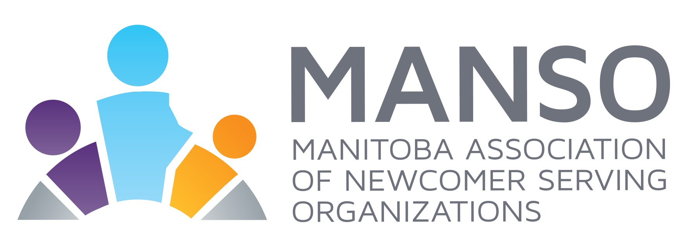

This free, open-access resource helps MANSO member organizations discover and pursue funding opportunities. Grants are organized across four regional sections:
Within each section, grants are grouped by category. Each entry shows a description, eligibility, timeline, and a link to apply. See the Table of Contents and Category Legend in the full directory document.
📌 Know of a grant we’re missing? Suggest a resource and the MANSO team will review it for inclusion.